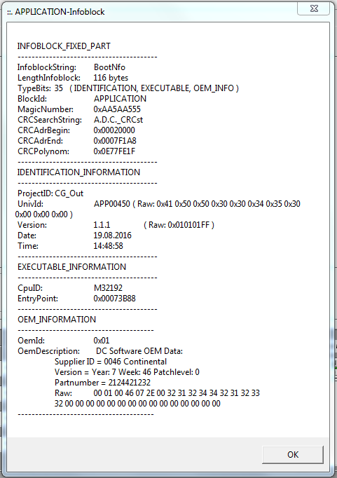

Do 08.09.2016 10:14
neue Notausfunktion:
Funk-Not-Aus ist getestet und funktioniert, Bitte Infos an alle weitergeben.
Die SW-Stände sind hier abgelegt:
\\frd2ahjg\Public\Insecure\Projects\Contiguard\Staende_EBS\Passat_B7\Regler_990\
Aktuell ist die Funk-Not-Aus Bremsen SW aufgespielt. (MQ6BBJ00018.elf)
Funktion:
v > 30 km/h nichts
v < 30 km/h Betriebsbremse (Hydraulisch)
v < 3 km/h Betriebsbremse druckablassen + Aktivierung EPB
Aktuell getestet bis ca. 25 km/h
Ebenfalls getestet habe ich bei normal Parken, hier wird Gestoppt und gemeldet "Bitte EPB lösen" sobald der Funk-Not-Aus entriegelt wird geht das Parkmanöver weiter.
Der F-TZ-990 lässt sich jetzt nur noch bewegen wenn der Funk-Not-Aus Entriegelt ist (hierzu kann er auch in der Ladestation verbleiben).
Entriegelt wird angezeigt wenn die linke LED grün Blinkt am Sender.
Ich erstelle noch eine ausführliche Beschreibung.
Falls Ihr vergesst den Funk-Not-Aus zu entriegeln könnt Ihr die EPB nicht lösen.
Fuß auf Bremse und EPB Taster drücken führt dazu das die EPB kurz gelöst wird aber sofort wieder anzieht.
Beim verlassen bzw. Abstellen des Fahrzeugs bitte ich euch den Funk-Not-Aus zu betätigen (damit wird der Sender abgeschaltet linke LED blinkt nicht mehr Grün, er hält zwar fast 14 Tage aber sollten wir nicht ausreizen).
Geladen wird nur solange das Fahrzeug wach ist, wenn er einschläft wird auch nicht mehr geladen.
Den Sender Bitte immer gerade aus der Ladeschale nehmen und auch gerade wieder rein (er geht momentan etwas schwer) der lade Pin wird sonst verbogen.
Reichweite des Funk-Not-Aus ist mindestens 50m (wenn ihr nicht gerade vor dem Fahrzeug steht gehen auch bis zu 100m und mehr.
Wenn der Sender nicht mehr in Reichweite ist wird eine Bremsung ausgelöst!
Was bei den neuen Funktionen passiert weiß ich noch nicht könnt Ihr mir aber Berichten bzw. bescheid geben wenn Ihr Testet dann komme ich ggf. mit wenn möglich.
Wenn Probleme auftreten sagt mir bescheid.
Noch eine Kleinigkeit:
Wenn Ihr nach dem Betätigen des Funk-Not-Aus sofort wieder entriegelt wird nicht Freigeschaltet !
Der Funk-Not-Aus muss ca. 2sek betätigt bleiben damit anschließend wieder Freigeschaltet wird beim Entriegeln. In diesem Fall muss der Funk-Not-Aus nochmals betätigt werden, am besten wartet Ihr mit dem Entriegeln immer bis die Linke grüne LED am Sender aus ist, wenn Ihr dann erst entriegelt wird auch immer Freigeschaltet. Im Normalen Betrieb tritt das eigentlich nicht auf. Das gilt auch wen der Sender außerhalb der Reichweite ist, hier muss einmal betätigt werden und wieder Entriegelt werden.
Fr 26.08.2016 16:37 lektzte Einstellung bevor neu EPS aufgespielt wurde:

Mo 02.11.2015 10:50
VPU2 APP00427 31.07.2015 13:34:47
VPU4 APP00394 09.09.2015 8:33:56
Di 08.09.2015 12:27
VPU2 APP00427 31.07.2015 13:34:47
VPU4 APP00391 08.09.2015 ~16:30:
Fr 24.07.2015 14:42
VPU4 APP00386 24.07.15 14:20:50 geänderte ID SALaLo0-Botschaft, Solllenkwinkelrampe
Bis dahin wurde mit
VPU4 APP00379 16.02.15 11:18:31
VPU2 APP00414 24.04.15 15:38:37